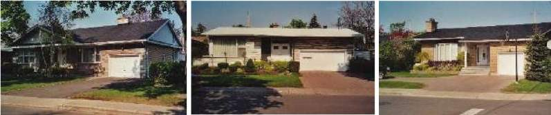
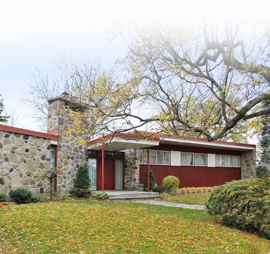

| Place | Local name | Phase years | Storeys | Roof | Window | Cladding | Garage |
|---|---|---|---|---|---|---|---|
| Gatineau | First-generation North American bungalow (bungalow nord-américain de première génération) Le bungalow nord-américain de première génération | 1945 – 1980 | 1–1.5 | gabled | – | wood-clapboard, clay-brick-red | – |
| Hampstead | Postwar detached house Maison unifamiliale d'après-guerre | 1945 – 1980 | – | – | – | – | – |
| Lévis | Modernist building Modernisme | 1940 – 1975 | varies by use | flat | horizontal | clay-brick, concrete, sheet-metal | – |
| Mercier–Hochelaga-Maisonneuve (borough of Montréal) | Brick bungalow of the 1950s Mercier developments Le bungalow de brique des lotissements de Mercier | 1945 – 1976 | 1 | gabled-or-hipped | horizontal | clay-brick | detached-or-set-back |
| Town of Mount Royal | Bungalow Maison bungalow | 1955 – 1975 | 1 | hipped | horizontal-2to1 | stone-natural, clay-brick-buff | integrated-facade |
| Québec City | Bungalow Bungalow | 1920 – 1970 | 1–1.5 | gabled | horizontal | clay-brick, stone, artificial-stone, wood-clapboard, metal-siding | – |
| Rosemont–La Petite-Patrie (borough of Montréal) | Bungalow Bungalow — « une ambiance de banlieue en ville » | 1960 – 2019 | 1 | hipped | horizontal | clay-brick-red, grey-limestone | detached-or-set-back |
| Saint-Lambert | The modern house (including the bungalow) La maison moderne | 1945 – 1970 | 1–2 | flat-or-low-slope | horizontal | stone, artificial-stone, clay-brick, wood, roughcast, metal-siding | integrated-or-carport |
| Villeray–Saint-Michel–Parc-Extension | Bungalow Bungalow | 1960 – 1980 | 1 | hipped | horizontal | clay-brick, stone | underground |

